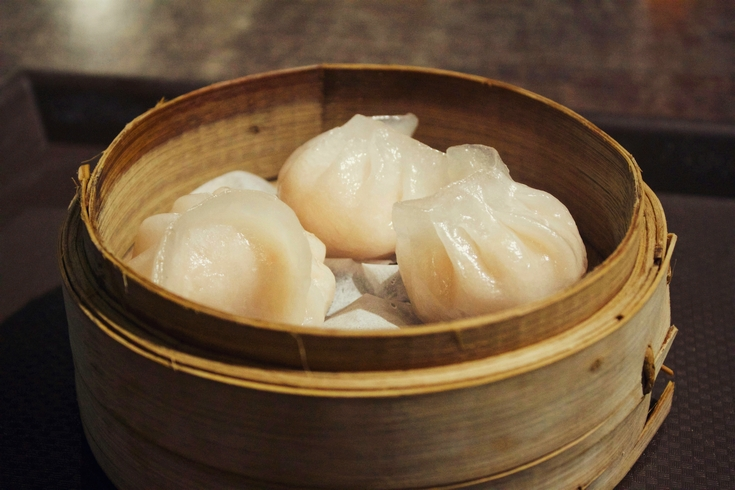
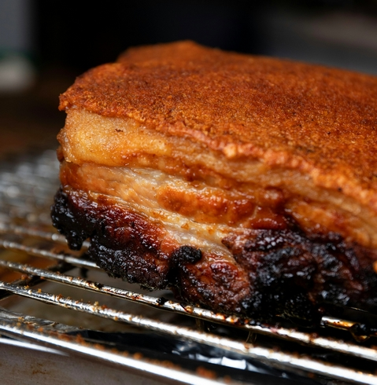
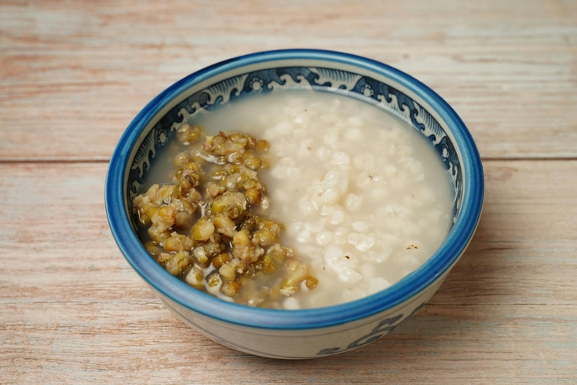

La cuisine du Guangdong trouve ses racines dans la province du Guangdong, ainsi qu'à Hong Kong et Macao, qui partagent une forte influence de cette tradition culinaire. Baignée par un climat subtropical marqué par des pluies abondantes, cette terre fertile est sculptée par la rivière des Perles, dont les crues saisonnières nourrissent les plaines avoisinantes, offrant des conditions idéales à la culture du riz.
Le riz occupe une place centrale au Guangdong et, plus largement, dans le sud de la Chine. La configuration géographique du delta de la rivière des Perles, combinée à un climat subtropical, façonne de vastes plaines vaseuses le long du fleuve. Ces terres fertiles deviennent alors de véritables greniers agricoles, propices à la culture du riz, des légumes et à l’élevage.
La proximité de la région avec l'océan favorise une abondance de poissons et de fruits de mer.
La cuisine cantonaise trouve ses origines sous la dynastie Han (environ 206 avant J.-C. - 220 après J.-C.). Dès cette époque, les chefs talentueux de Guangzhou maîtrisaient déjà l’art de cuisiner divers ingrédients en utilisant des techniques spécifiques.
Suite à l'effondrement de la dynastie des Song du Nord et au déplacement de la capitale vers le sud sous la dynastie des Song du Sud (1127 - 1279), Guangzhou devint un centre majeur pour les arts culinaires, avec l'arrivée de nombreux cuisiniers et un développement notable de la cuisine cantonaise. Leur savoir-faire combiné permit à la cuisine cantonaise d’atteindre une maturité et de se doter de caractéristiques distinctives.
Sous les dynasties Ming (1368 - 1644) et Qing (1644 - 1911), la cuisine cantonaise se systématisa. Guangzhou se transforma en un véritable centre gastronomique, animé par des maisons de thé, des auberges, des restaurants et des échoppes de collations, renforçant ainsi sa renommée culinaire. C'est à cette époque que le Guangdong s'affirme comme un carrefour essentiel pour les échanges internationaux. Guangzhou devient un pôle commercial incontournable, attirant les Européens, notamment les Portugais et les Britanniques, puis les Américains, favorisant ainsi l'essor économique de la région et l'importation de nouveaux ingrédients.
Au début du XIXe siècle, une vague d’émigration en provenance du Guangdong conduisit à l’implantation de nombreux restaurants cantonais en Amérique du Nord. Peu à peu, la cuisine cantonaise conquit le monde, devenant la tradition culinaire chinoise la plus largement reconnue à l’international.
Les plats cantonais se distinguent par des saveurs douces, fraîches et naturelles. Contrairement à certaines cuisines régionales qui misent sur des épices fortes ou des goûts prononcés, la cuisine cantonaise célèbre la pureté du goût des ingrédients de qualité supérieure. Les légumes sont souvent sautés pour préserver leur couleur éclatante et leur texture croquante, tandis que les fruits de mer ou poissons frais sont cuits à la vapeur dans des paniers en bambou afin de mettre en valeur leur douceur naturelle. La cuisine cantonaise est une véritable symphonie de notes subtiles mais complexes, obtenues par une maîtrise exceptionnelle des sauces, assaisonnements et techniques de cuisson.
L’objectif est de préserver l’essence même de chaque ingrédient. Plutôt que de dissimuler les mets sous une multitude d'épices, la cuisine cantonaise cherche à mettre en lumière les saveurs intrinsèques des légumes, viandes et fruits.
Les saveurs prédominantes dans la cuisine cantonaise sont umami, salées, sucrées, douces, fraîches et naturelles.
La cuisine cantonaise évite l'excès d'huile ou de graisses, et les produits laitiers y sont rarement utilisés. Contrairement à certains plats riches en calories d'autres cuisines régionales, la cuisine cantonaise se distingue par sa légèreté et est souvent accompagnée de riz blanc ou de nouilles de riz pour un repas équilibré.
Les chefs cantonais disposent d'une large palette d'ingrédients, allant de la volaille, des oiseaux et des fruits de mer, sans oublier une grande variété de légumes et de fruits. L'accent est mis sur la sélection des meilleures parties de chaque ingrédient pour la préparation des plats.
Il existe un proverbe en Chine qui dit « les cantonais mangent tout ce qui a quatre pattes sauf les tables et les chaises. » En effet, diverses viandes exotiques sont consommées en Guangdong telles que les grenouilles, les tortues ou les serpents.
Le Guangdong est également le berceau de sauces emblématiques qui, bien qu'étant des éléments clés de la cuisine cantonaise, ont été largement adoptées dans d'autres régions de Chine et au-delà.
Parmi elles, la sauce d’huître, au goût profond et umami, est utilisée dans les plats sautés au wok, comme marinade pour viandes et fruits de mer ou comme base pour diverses sauces d'accompagnement.
La sauce hoisin, à la douceur subtilement sucrée-salée, est généralement utilisée comme marinade ou comme base de trempette.
Au Xe siècle, avec l'essor du commerce à Guangzhou, de nombreuses personnes fréquentaient les maisons de thé pour déguster des repas légers accompagnés de thé, appelés yum cha. Au fil du temps, les propriétaires de maisons de thé ont ajouté des petites bouchées appelées dim sum à leur menu.
Ces délices, généralement cuits à la vapeur ou frits, comprennent une grande variété de raviolis, rouleaux ou petites pâtisseries. Parmi les plus célèbres, on retrouve le har gow (ravioli à la crevette), le siu mai (ravioli ouvert à la viande de porc et crevette) ou encore le char siu bao (pain à la vapeur farci au porc laqué).
La culture du dim sum cantonnais s'est rapidement développée à Guangzhou à la fin du XIXe siècle. Initialement basée sur des produits locaux, elle a évolué en intégrant des influences d'autres régions de Chine. Le dim sum cantonnais offre une large gamme de saveurs, de textures, de styles de cuisson et d'ingrédients.

Les siu mei désignent en cantonais les viandes, souvent du porc ou du canard, rôties sur des broches au-dessus d'un feu ou dans un four à rotisserie. Cette méthode de cuisson donne une saveur barbecue unique et les viandes sont généralement nappées d'une sauce avant d'être rôties.
Ces rôtisseries sont très populaires en Guangdong, Hong Kong, Macao mais aussi dans les Chinatown à travers le monde, surtout parmi les émigrés cantonais.
Les siu mei les plus connus sont le char siu (porc rôti sucré) et le siu yuk (poitrine de porc croustillante).
À Hong Kong, la consommation de siu mei est si courante que l'on estime qu'en moyenne, chaque habitant en déguste une fois tous les quatre jours.

Un autre plat essentiel dans la cuisine cantonaise est le congee, une soupe de riz souvent consommée au petit-déjeuner. Cette bouillie de riz est délicatement parfumée et servie avec divers accompagnements tels que des œufs salés, des légumes marinés, du poisson ou de la viande.
Dans la culture cantonaise, le congee est synonyme de réconfort et de bien-être. Il est souvent recommandé aux personnes malades ou convalescentes en raison de sa digestibilité et de sa douceur pour l’estomac. Il joue aussi un rôle important dans la médecine chinoise, où il est considéré comme un plat équilibrant et revitalisant. Certains congees sont enrichis d’ingrédients aux propriétés médicinales, comme le gingembre, le ginseng ou les champignons chinois, pour renforcer l’organisme.
